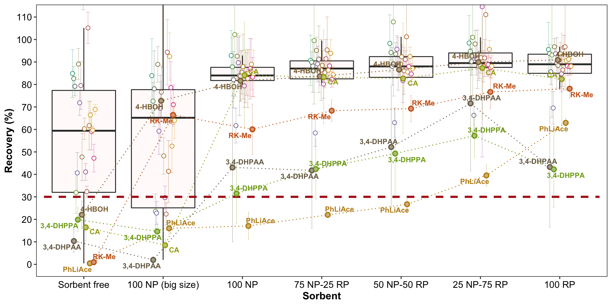
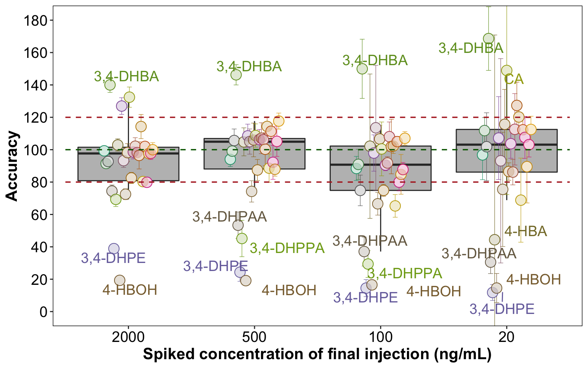
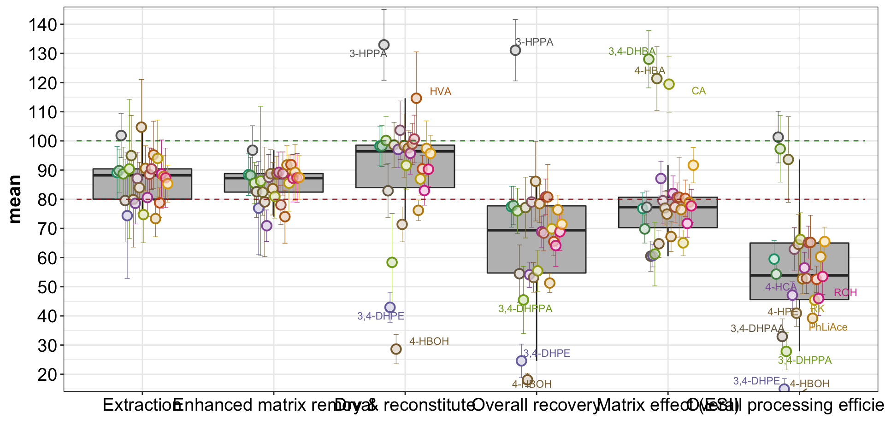

EMR RK Analysis Script
library(rebus)
library(cowplot)
library(gridExtra)
library(readxl)
library(RColorBrewer)
library(ggrepel)
library(tidyverse)
theme_set(theme_bw() + theme(axis.text = element_text(colour = "black", size = 14.5),
axis.title = element_text(colour = "black", face = "bold", size = 15.5),
strip.background = element_blank(),
panel.border = element_rect(size = .5, color = "black"),
strip.text = element_text(face = "bold", size = 12)))Sorbent optimization
path = "/Users/Boyuan/Desktop/My publication/17. EMR Adipose RK metabolites/data RK lipid EMR validation 3th ,Zhiya 081920.xlsx"
color.cmpd = colorRampPalette(brewer.pal(8, "Dark2"))(26) %>% sort() %>% sort()
d.opt.sorbent = read_excel(path, sheet = "sorbent opt")
d.opt.sorbent = d.opt.sorbent %>%
gather(-c(`Data File`, sorbent, `Acq. Date-Time`), key = compound, value = resp)
x = d.opt.sorbent %>% filter(sorbent == "ctrl") %>%
group_by(compound) %>%
summarise(resp.ctrl.mean = mean(resp),
resp.ctrl.sd = sd(resp))
y = d.opt.sorbent %>% filter(sorbent != "ctrl") %>%
group_by(sorbent, compound) %>%
summarise(resp.mean = mean(resp), resp.sd = sd(resp))
d.opt.sorbent.recovery = y %>% left_join(x, by = c("compound")) %>%
mutate(recovery.mean = resp.mean / resp.ctrl.mean * 100,
recovery.sd = sqrt((resp.sd/resp.mean)^2 + (resp.ctrl.sd/resp.ctrl.mean)^2) * recovery.mean )
d.opt.sorbent.recovery## # A tibble: 182 x 8
## # Groups: sorbent [7]
## sorbent compound resp.mean resp.sd resp.ctrl.mean
## <chr> <chr> <dbl> <dbl> <dbl>
## 1 100 NP 3-HBA 2537. 91.8 2731.
## 2 100 NP 3-HPAA 2248. 329. 2560.
## 3 100 NP 3-HPPA 3208. 479. 3907.
## 4 100 NP 3,4-DHBA 1123. 178. 1099.
## 5 100 NP 3,4-DHP… 176. 119. 407.
## 6 100 NP 3,4-DHPE 1031. 93.5 1672.
## 7 100 NP 3,4-DHP… 203. 81.7 646.
## 8 100 NP 4-HBA 6886. 742. 7439.
## 9 100 NP 4-HBOH 2652. 280. 3249.
## 10 100 NP 4-HCA 1226. 152. 1367.
## # … with 172 more rows, and 3 more variables:
## # resp.ctrl.sd <dbl>, recovery.mean <dbl>,
## # recovery.sd <dbl>d.opt.sorbent.recovery$sorbent = d.opt.sorbent.recovery$sorbent %>%
factor(levels = c("Sorbent free", "100 NP (big size)", "100 NP", "75 NP-25 RP", "50 NP-50 RP", "25 NP-75 RP", "100 RP"), ordered = T)
# low recovery compounds without sorbent
l = d.opt.sorbent.recovery %>% filter(sorbent == "Sorbent free") %>%
filter(recovery.mean < 30)
cmpd.lowRecovery = c("RK-Me", "PhLiAce", "3,4-DHPPA", "3,4-DHPAA", "CA", "4-HBOH")
dg = .3
plt.sorbentOptimization = d.opt.sorbent.recovery %>%
filter(!compound %in% cmpd.lowRecovery ) %>%
ggplot(aes(x = sorbent, y = recovery.mean, color = compound, fill = compound)) +
geom_boxplot(data = d.opt.sorbent.recovery, outlier.alpha = 0,
width = .8, fill = "snow1",
aes(group = sorbent)) +
geom_errorbar(aes(ymin = recovery.mean - recovery.sd,
ymax = recovery.mean + recovery.sd),
position = position_dodge(dg), size = .1, width = 1) +
geom_point(position = position_dodge(dg), shape = 21, fill = "white", size = 2) +
theme(legend.position = "none", panel.grid = element_blank(),
axis.text = element_text(size = 11, colour = "black"),
axis.title = element_text(size = 12, colour = "black")) +
scale_y_continuous(breaks = seq(0, 150, by = 10)) +
coord_cartesian(ylim = c(0, 110)) +
# threshold
geom_segment(aes(x = .5, xend = 7.5, y = 30, yend = 30),
linetype = "dashed", size = 1, color = "firebrick") +
# add special note to low-recovery compound
geom_line(data = d.opt.sorbent.recovery %>% filter(compound %in% cmpd.lowRecovery),
aes(group = compound), position = position_dodge(dg), linetype = "dotted") +
geom_errorbar(data = d.opt.sorbent.recovery %>% filter(compound %in% cmpd.lowRecovery),
aes(ymin = recovery.mean - recovery.sd,
ymax = recovery.mean + recovery.sd),
position = position_dodge(dg), size = .1, width = .1) +
geom_point(data = d.opt.sorbent.recovery %>% filter(compound %in% cmpd.lowRecovery),
aes(group = compound), position = position_dodge(dg),
shape = 21, fill = "white", size = 2, stroke = 1) +
# fill with transparent color
geom_point(data = d.opt.sorbent.recovery %>% filter(compound %in% cmpd.lowRecovery),
aes(group = compound), position = position_dodge(dg),
shape = 21, size = 2, alpha = .6) +
geom_text_repel(data = d.opt.sorbent.recovery %>% filter(compound %in% cmpd.lowRecovery),
aes(label = compound), size = 3, fontface = "bold",
position = position_dodge(dg)) +
labs(y = "Recovery (%)", x = "Sorbent") +
scale_color_manual(values = color.cmpd) +
scale_fill_manual(values = color.cmpd)
# 7.5 X 8.9 Mac screenplt.sorbentOptimization
d.opt.sorbent.recovery %>%
filter(compound %in% c("RK-Me", "PhLiAce", "4-HBOH")) %>%
select(sorbent, compound, recovery.mean) %>% spread(sorbent, recovery.mean)## # A tibble: 3 x 8
## compound `Sorbent free` `100 NP (big si… `100 NP`
## <chr> <dbl> <dbl> <dbl>
## 1 4-HBOH 22.1 72.7 81.6
## 2 PhLiAce 0.456 16.0 17.1
## 3 RK-Me 0.952 66.4 60.0
## # … with 4 more variables: `75 NP-25 RP` <dbl>, `50
## # NP-50 RP` <dbl>, `25 NP-75 RP` <dbl>, `100 RP` <dbl>d.opt.sorbent.recovery$compound %>% n_distinct()## [1] 26# Effect of sorbent mass
d.opt.sorbent.mass = read_excel(path, sheet = "sorbent mass")
d.opt.sorbent.mass = d.opt.sorbent.mass %>%
gather(-c(`Data File`, code, `Acq. Date-Time`, `sorbent mass`), key = compound, value = resp) %>%
group_by(compound) %>%
mutate(resp.relative = resp / mean(resp))
d.opt.sorbent.mass = d.opt.sorbent.mass %>%
group_by(`sorbent mass`, compound) %>%
summarise(resp.relative.mean = mean(resp.relative), resp.relative.sd = sd(resp.relative))
d.opt.sorbent.mass## # A tibble: 78 x 4
## # Groups: sorbent mass [3]
## `sorbent mass` compound resp.relative.m…
## <chr> <chr> <dbl>
## 1 1~5 mg 3-HBA 1.06
## 2 1~5 mg 3-HPAA 1.03
## 3 1~5 mg 3-HPPA 1.10
## 4 1~5 mg 3,4-DHBA 1.21
## 5 1~5 mg 3,4-DHP… 1.50
## 6 1~5 mg 3,4-DHPE 1.18
## 7 1~5 mg 3,4-DHP… 1.23
## 8 1~5 mg 4-HBA 1.06
## 9 1~5 mg 4-HBOH 1.07
## 10 1~5 mg 4-HCA 1.07
## # … with 68 more rows, and 1 more variable:
## # resp.relative.sd <dbl>plt.sorbent.mass = d.opt.sorbent.mass %>%
ggplot(aes(x = `sorbent mass`, y = resp.relative.mean, color = compound)) +
geom_boxplot(aes(group = `sorbent mass`), outlier.alpha = 0) +
geom_errorbar(aes(ymin = resp.relative.mean - resp.relative.sd,
ymax = resp.relative.mean + resp.relative.sd),
position = position_dodge(.5), size = .2, width = 1.2) +
geom_point(position = position_dodge(.5), shape = 21, fill = "white") +
theme(legend.position = "none") +
coord_cartesian(ylim = c(.5, 1.6)) +
scale_y_continuous(breaks = seq(.6, 1.6, .2)) +
labs(y = "Relative peak intensity", caption = "Reconstituted in 100 uL 60% MeOH 0.1% FA before LCMS analysis")
plt.sorbent.mass# <>0^%@#$!)(*&^$##&$)^$(^#!~#$)# <>0^%@#$!)(*&^$##&$)^$(^#!~#$)# <>0^%@#$!)(*&^$##&$)^$(^#!~#$)# <>0^%@#$!)(*&^$##&$)^$(^#!~#$)Accuracy validation
# Validation
d.conc = read_excel(path, sheet = "calculated concentration")
d.conc = d.conc %>%
gather(-c(`Data File`, Name, `Acq. Date-Time`), key = compound, value = conc) %>%
select(-`Acq. Date-Time`)
# blank concentration
d.conc.blk = d.conc %>% filter(Name == "Adi + Enz") %>%
select(-c(Name, `Data File`)) %>%
group_by(compound) %>%
summarise(conc.blk.mean = mean(conc, na.rm = T),
conc.blk.sd = sd(conc, na.rm = T))
# total measured conc. (spiked + background)
d.ABCD = d.conc %>% filter(Name %in% c("A", "B", "C", "D")) %>%
group_by(compound, Name) %>%
summarise(conc.all.mean = mean(conc, na.rm = T),
conc.all.sd = sd(conc, na.rm = T))
# subract background
d.ABCD = d.ABCD %>% left_join(d.conc.blk, by = "compound") %>%
mutate(conc.spk.mean = conc.all.mean - conc.blk.mean,
conc.spk.sd = (conc.all.sd^2 + conc.blk.sd^2) %>% sqrt()) %>%
select(compound, Name, contains("spk"))
# Expected spiked amount
d.expect = read_excel(path, sheet = "stock solution", range = "B2:O28") %>%
select(compound, A, B, C, D)
d.expect = d.expect %>%
gather(-compound, key = Name, value = conc.expected)
# Compute Accuracy
d.ABCD = d.ABCD %>% left_join(d.expect, by = c("compound", "Name")) %>%
mutate(Accuracy.mean = conc.spk.mean / conc.expected * 100,
Accuracy.sd = conc.spk.sd / conc.expected * 100) %>%
# add spike concentration level
ungroup() %>%
mutate(level = rep(c("2000", "500", "100", "20"), time = d.ABCD$compound %>% n_distinct()),
level = factor(level, levels = c("2000", "500", "100", "20"), ordered = T))
# 3,4-DHPPA D level below limit of quantification
d.ABCD = d.ABCD %>% filter(! ((compound == "3,4-DHPPA") & (Name == "D")))
# accuracy box plot
dg = .4plt.accuracy = d.ABCD %>%
ggplot(aes(x = level, y = Accuracy.mean, color = compound, fill = compound)) +
geom_boxplot(outlier.alpha = 0, aes(group = Name), fill = "grey", width = .8) +
geom_errorbar(aes(ymin = Accuracy.mean - Accuracy.sd,
ymax = Accuracy.mean + Accuracy.sd ),
size = .2, width = 1, position = position_dodge(dg)) +
geom_point(position = position_dodge(dg), shape = 21, fill = "white", size = 4.5) +
geom_point(position = position_dodge(dg), shape = 21, alpha = 0.2, size = 4.5) +
theme(legend.position = "None", panel.grid = element_blank()) +
scale_y_continuous(breaks = seq(0, 180, by = 20)) +
geom_text_repel(data = d.ABCD %>%
filter(Accuracy.mean > 140 | Accuracy.mean < 60 ),
aes(label = compound), size = 5, position = position_dodge(dg)) +
coord_cartesian(ylim = c(0, 180)) +
annotate("segment", x = .5, xend = 4.5, y = 120, yend = 120,
linetype = "dashed", size = .6, color = "firebrick") +
annotate("segment", x = .5, xend = 4.5, y = 80, yend = 80,
linetype = "dashed", size = .6, color = "firebrick") +
annotate("segment", x = .5, xend = 4.5, y = 100, yend = 100,
linetype = "dashed", size = .6, color = "darkgreen") +
scale_color_manual(values = color.cmpd) +
scale_fill_manual(values = color.cmpd) +
labs(y = "Accuracy", x = "Spiked concentration of final injection (ng/mL)")plt.accuracy
# annotation standard: Accuracy.mean > 140 | Accuracy.mean < 60 | Accuracy.sd > 50
d.ABCD %>% filter(Accuracy.sd > 50) ## # A tibble: 3 x 8
## compound Name conc.spk.mean conc.spk.sd conc.expected
## <chr> <chr> <dbl> <dbl> <dbl>
## 1 4-HBA D 7.77 22.1 17.5
## 2 4-HPAA D 18.1 12.3 19.4
## 3 CA D 32.4 16.7 21.7
## # … with 3 more variables: Accuracy.mean <dbl>,
## # Accuracy.sd <dbl>, level <ord># <>)*$#*(#@!$&<>*&%$#@!@#^*^# <>)*$#*(#@!$&<>*&%$#@!@#^*^# <>)*$#*(#@!$&<>*&%$#@!@#^*^# <>)*$#*(#@!$&<>*&%$#@!@#^*^Stepwise recovery validation
# Recovery at each step
d.area = read_excel(path, sheet = "peak area")
d.area = d.area %>%
gather(-c(`Data File`, Name, `Acq. Date-Time`), key = compound, value = area)
d.area.copy = d.area # make a copy for later use with comparison with internal standard
# background
d.area.blk = d.area %>% filter(Name == "Adi + Enz") %>%
group_by(compound) %>%
summarise(area.blk.mean = mean(area, na.rm = T),
area.blk.sd = sd(area, na.rm = T))
# total area at each step ( spiked + background )
d.area.steps = d.area %>%
filter(Name %in% c("B", "C", "PX", "PC", "PR", "PR neat", "no silica gel", "PR neat")) %>%
group_by(compound, Name) %>%
summarise(area.mean = mean(area, na.rm = T),
area.sd = sd(area, na.rm = T))
#good
# subtract background
d.area.steps = d.area.steps %>% left_join(d.area.blk, by = "compound") %>%
mutate(area.spk.mean = area.mean - area.blk.mean,
area.spk.sd = (area.sd^2 + area.blk.sd^2) %>% sqrt()) %>%
select(compound, Name, contains("spk"))
d.area.steps ## # A tibble: 182 x 4
## # Groups: compound [26]
## compound Name area.spk.mean area.spk.sd
## <chr> <chr> <dbl> <dbl>
## 1 3-HBA B 18195. 1554.
## 2 3-HBA C 3564. 249.
## 3 3-HBA no silica gel 3845. 288.
## 4 3-HBA PC 23085. 1431.
## 5 3-HBA PR 23494. 727.
## 6 3-HBA PR neat 30583. 1915.
## 7 3-HBA PX 20413. 1060.
## 8 3-HPAA B 6893. 491.
## 9 3-HPAA C 1320. 123.
## 10 3-HPAA no silica gel 1535. 74.5
## # … with 172 more rows# spread apart steps into separate columns
x = d.area.steps %>% select(-area.spk.sd) %>%
spread(key = Name, value = area.spk.mean)
colnames(x) = c("compound", colnames(x)[-1] %>% str_c(".mean"))
y = d.area.steps %>% select(-area.spk.mean) %>%
spread(key = Name, value = area.spk.sd)
colnames(y) = c("compound", colnames(y)[-1] %>% str_c(".sd"))
y## # A tibble: 26 x 8
## # Groups: compound [26]
## compound B.sd C.sd `no silica gel.… PC.sd PR.sd
## <chr> <dbl> <dbl> <dbl> <dbl> <dbl>
## 1 3-HBA 1554. 249. 288. 1431. 727.
## 2 3-HPAA 491. 123. 74.5 489. 397.
## 3 3-HPPA 2908. 936. 281. 3529. 1474.
## 4 3,4-DHBA 4313. 971. 658. 4378. 2164.
## 5 3,4-DHP… 2733. 502. 377. 2327. 1664.
## 6 3,4-DHPE 811. 147. 83.6 707. 448.
## 7 3,4-DHP… 2083. 359. 107. 3207. 3292.
## 8 4-HBA 10031. 5853. 2516. 7081. 3001.
## 9 4-HBOH 933. 232. 102. 2094. 1614.
## 10 4-HCA 1983. 459. 360. 2743. 1404.
## # … with 16 more rows, and 2 more variables: `PR
## # neat.sd` <dbl>, PX.sd <dbl>d.area.steps = left_join(x, y, by = "compound")
# recovery at each steps (now background subtracted)
d.recovery = d.area.steps %>%
mutate(
# extraction (relative to spike amount of post extraction or PX)
rec.extraction.mean = B.mean / PX.mean * 100,
rec.extraction.sd = sqrt((PX.sd / PX.mean)^2 + (B.sd / B.mean)^2) * rec.extraction.mean,
# EMR clean up (relative to spike amount of post clean up or PC)
rec.EMR.mean = PX.mean / PC.mean * 100,
rec.EMR.sd = sqrt((PX.sd / PX.mean)^2 + (PC.sd / PC.mean)^2)* rec.EMR.mean,
# SpeedVac drying & reconstitution (relative to spike amount of post reconstitution or PR)
rec.DryReconstitute.mean = PC.mean / PR.mean * 100,
rec.DryReconstitute.sd = sqrt((PC.sd / PC.mean)^2 + (PR.sd / PR.mean)^2) * rec.DryReconstitute.mean,
# # add silica gel effect (relative to without, using spike level C)
# sorbent.mean = C.mean / `no silica gel.mean`, # (improvenment fold), with improvement > 1
# sorbent.sd = sqrt((`no silica gel.sd` / `no silica gel.mean`)^2 + (C.sd / C.mean)^2) * sorbent.mean,
# Overall recovery
rec.Overall.mean = B.mean / PR.mean * 100,
rec.Overall.sd = sqrt((B.sd / B.mean)^2 + (PR.sd/ PR.mean)^2) * rec.Overall.mean,
# matrix effect to ESI
matrixESI.mean = PR.mean / `PR neat.mean` * 100,
matrixESI.sd = sqrt((PR.sd / PR.mean)^2 + (`PR neat.sd` / `PR neat.mean`)^2) * matrixESI.mean,
# Overall processing efficiency
process.eff.mean = B.mean / `PR neat.mean` * 100,
process.eff.sd = sqrt((B.sd / B.mean)^2 + (`PR neat.sd` / `PR neat.mean`)^2) * process.eff.mean) %>%
select(compound, contains("rec"), contains("ESI"), contains("process"))
x = d.recovery %>%
select(compound, contains("mean")) %>%
gather(-compound, key = step, value = mean) %>%
mutate(step = str_remove(step, pattern = ".mean"))
y = d.recovery %>%
select(compound, contains("sd")) %>%
gather(-compound, key = step, value = sd) %>%
mutate(step = str_remove(step, pattern = ".sd"))
y## # A tibble: 156 x 3
## # Groups: compound [26]
## compound step sd
## <chr> <chr> <dbl>
## 1 3-HBA rec.extraction 8.91
## 2 3-HPAA rec.extraction 7.39
## 3 3-HPPA rec.extraction 7.61
## 4 3,4-DHBA rec.extraction 9.13
## 5 3,4-DHPAA rec.extraction 14.2
## 6 3,4-DHPE rec.extraction 21.5
## 7 3,4-DHPPA rec.extraction 23.9
## 8 4-HBA rec.extraction 13.8
## 9 4-HBOH rec.extraction 16.3
## 10 4-HCA rec.extraction 7.07
## # … with 146 more rowsd.recovery.tidy = x %>% left_join(y, by = c("compound", "step"))
# compound wise
# d.recovery.tidy %>%
# ggplot(aes(x = compound, y = mean, color = step)) +
# geom_point(position = position_dodge(dg)) +
# coord_flip()
# overview
d.recovery.tidy$step = d.recovery.tidy$step %>% str_replace(pattern = "rec.extraction", replacement = "Extraction")
d.recovery.tidy$step = d.recovery.tidy$step %>% str_replace(pattern = "rec.EMR", replacement = "Enhanced matrix removal")
d.recovery.tidy$step = d.recovery.tidy$step %>% str_replace(pattern = "rec.DryReconstitute", replacement = "Dry & reconstitute")
d.recovery.tidy$step = d.recovery.tidy$step %>% str_replace(pattern = "rec.Overall", replacement = "Overall recovery")
d.recovery.tidy$step = d.recovery.tidy$step %>% str_replace(pattern = "matrixESI", replacement = "Matrix effect (ESI)")
d.recovery.tidy$step = d.recovery.tidy$step %>% str_replace(pattern = "process.eff", replacement = "Overall processing efficiency")
d.recovery.tidy$step = factor(d.recovery.tidy$step, levels = d.recovery.tidy$step %>% unique(), ordered = T)
plt.recovery.steps = d.recovery.tidy %>%
ggplot(aes(x = step, y = mean, color = compound, fill = compound)) +
geom_boxplot(outlier.alpha = 0, fill = "grey", aes(group = step)) +
geom_errorbar(aes(ymin = mean - sd, ymax = mean + sd),
position = position_dodge(dg),
size = .2, width = 1) +
geom_point(position = position_dodge(dg),
shape = 21, size = 3, stroke = 1, fill = "white") +
geom_point(position = position_dodge(dg),
shape = 21, size = 3, stroke = 1, alpha = .2) +
annotate("segment", x = .5, xend = 6.5, y = 100, yend = 100,
linetype = "dashed", size = .4, color = "darkgreen") +
annotate("segment", x = .5, xend = 6.5, y = 80, yend = 80,
linetype = "dashed", size = .4, color = "firebrick") +
coord_cartesian(ylim = c(20, 140)) +
scale_y_continuous(breaks = seq(0, 200, by = 10)) +
scale_color_manual(values = color.cmpd) +
scale_fill_manual(values = color.cmpd) +
theme(legend.position = "None") +
labs(x = " ") +
geom_text_repel(data = d.recovery.tidy %>% filter(mean > 110 | mean <= 50),
aes(label = compound), position = position_dodge(dg), size = 3)plt.recovery.steps
# *<^%#^&*$#@!%$#^&*<^%#^&*$#@!%$#^&*<^%#^&*$#@!%$#^&*<^%#^&*$#@!%$#^&*<^%#^&*$#@!%$#^&*<^%#^&*$#@!%$#^&*<^%#^&*$#@!%$#^&Sorbent effect revisit
# sorbent improvement effect
# For this section the peak area should NOT subtract background since background is measured WITH sorbent. The with sorbent and without sorbent should be compared directly with background content included
d.area.sorbent = d.area %>% filter(Name %in% c("C", "no silica gel")) %>%
group_by(compound, Name) %>%
summarise(area.mean = mean(area),
area.sd = sd(area))
x = d.area.sorbent %>% select(-area.sd) %>% spread(key = Name, value = area.mean)
colnames(x) = c("compound", "C.mean", "no silica gel.mean")
y = d.area.sorbent %>% select(-area.mean) %>% spread(key = Name, value = area.sd)
colnames(y) = c("compound", "C.sd", "no silica gel.sd")
d.area.sorbent = left_join(x, y, by = "compound") %>%
mutate(sorbent.mean = C.mean / `no silica gel.mean`,
sorbent.sd = C.sd / `no silica gel.sd`)
dg. =5
plt.sorbent.validate = d.area.sorbent %>%
ggplot(aes(x = 1, y = sorbent.mean, color = compound, fill = compound)) +
geom_boxplot(outlier.alpha = 0, fill = "grey", aes(group = 1)) +
geom_errorbar(aes(ymin = sorbent.mean - sorbent.sd,
ymax = sorbent.mean + sorbent.sd),
position = position_dodge(dg),
size = .2, width = 1) +
geom_point(position = position_dodge(dg),
shape = 21, size = 3, stroke = 1, fill = "white") +
geom_point(position = position_dodge(dg),
shape = 21, size = 3, stroke = 1, alpha = .2) +
annotate("segment", x = .5, xend = 1.5, y = 1, yend = 1,
linetype = "dashed", size = .4, color = "darkgreen") +
scale_color_manual(values = color.cmpd) +
scale_fill_manual(values = color.cmpd) +
theme(legend.position = "None",
axis.text.x = element_blank(),
axis.ticks.x = element_blank()) +
labs(x = "", y = "Fold increase of peak area with sorbent than without ") +
geom_text_repel(data = d.area.sorbent %>% filter(sorbent.mean > 2),
aes(label = compound), position = position_dodge(dg), size = 3) +
# scale_y_continuous(breaks = seq(0, 7, 1))+
coord_cartesian(ylim = c(0, 6))plt.sorbent.validate#0*^$@$^!#%&*#0*^$@$^!#%&*#0*^$@$^!#%&*#0*^$@$^!#%&*#0*^$@$^!#%&*#0*^$@$^!#%&*#0*^$@ISTD-corrected stepwise recovery
# Recovery with internal standard correcting the loss effect
# IS area in each sample file
d.area.IS1 = read_excel(path, sheet = "IS1 peak area")
d.area.IS2 = read_excel(path, sheet = "IS2 peak area")
d.area.IS = d.area.IS1 %>%
left_join(d.area.IS2 %>% select(-c(`Acq. Date-Time`, Name)),
by = c("Data File"))
# d.area.IS[!complete.cases(d.area.IS), ]
# Compounds vs. IS
d.IS = read_excel(path, sheet = "IS")
# Compoute area corrected
d.area.corrected = d.area.copy %>%
filter(Name %in% c("B", "PX", "PC", "PR", "PR neat")) %>%
# subtract background on a sample wise manner
left_join(d.area.blk, by = "compound") %>%
mutate(spk.mean = area - area.blk.mean,
spk.sd = area.blk.sd) %>%
select(-c(area, contains("blk"))) %>%
# which IS
left_join(d.IS, by = "compound")
# compounds using 4-HBA as IS
x = d.area.corrected %>% filter(IS == "4-HBA-d4") %>%
left_join(d.area.IS %>% select(`Data File`, `4-HBA-d4`), by = "Data File") %>%
rename(area.IS = `4-HBA-d4`)
# compounds using cinnamic acid as IS
y = d.area.corrected %>% filter(IS == "cinnamic-d6") %>%
left_join(d.area.IS %>% select(`Data File`, `cinnamic-d6`), by = "Data File") %>%
rename(area.IS = `cinnamic-d6`)
# combine 2 IS's
d.area.corrected = rbind(x, y)
d.area.corrected = d.area.corrected %>%
select(-c(`Data File`, `Acq. Date-Time`)) %>%
# now area corrected with area of IS, shown as the ratio
mutate(ratio = spk.mean / area.IS,
ratio.sd = spk.sd / area.IS) %>%
select(-contains("spk"), -contains("IS"))
d.area.corrected = d.area.corrected %>%
group_by(Name, compound) %>%
summarise(ratio.mean = mean(ratio, na.rm = T),
ratio.sd = sd(ratio, na.rm = T))
# d.area.corrected[!complete.cases(d.area.corrected), ]
# spread columns apart
x = d.area.corrected %>% select(-ratio.sd) %>%
spread(key = Name, value = ratio.mean)
colnames(x) = c("compound", colnames(x)[-1] %>% str_c(".mean") )
y = d.area.corrected %>% select(-ratio.mean) %>%
spread(key = Name, value = ratio.sd)
colnames(y) = c("compound", colnames(y)[-1] %>% str_c(".sd") )
d.area.corrected = left_join(x, y, by = "compound")
# compute recovery corrected by IS
d.recovery.corrected = d.area.corrected %>%
# the recovery code format is the same as above without correction
mutate(
# extraction (relative to spike amount of post extraction or PX)
rec.extraction.mean = B.mean / PX.mean * 100,
rec.extraction.sd = sqrt((PX.sd / PX.mean)^2 + (B.sd / B.mean)^2) * rec.extraction.mean,
# EMR clean up (relative to spike amount of post clean up or PC)
rec.EMR.mean = PX.mean / PC.mean * 100,
rec.EMR.sd = sqrt((PX.sd / PX.mean)^2 + (PC.sd / PC.mean)^2)* rec.EMR.mean,
# SpeedVac drying & reconstitution (relative to spike amount of post reconstitution or PR)
rec.DryReconstitute.mean = PC.mean / PR.mean * 100,
rec.DryReconstitute.sd = sqrt((PC.sd / PC.mean)^2 + (PR.sd / PR.mean)^2) * rec.DryReconstitute.mean,
# # add silica gel effect (relative to without, using spike level C)
# sorbent.mean = C.mean / `no silica gel.mean`, # (improvenment fold), with improvement > 1
# sorbent.sd = sqrt((`no silica gel.sd` / `no silica gel.mean`)^2 + (C.sd / C.mean)^2) * sorbent.mean,
# Overall recovery
rec.Overall.mean = B.mean / PR.mean * 100,
rec.Overall.sd = sqrt((B.sd / B.mean)^2 + (PR.sd/ PR.mean)^2) * rec.Overall.mean,
# matrix effect to ESI
matrixESI.mean = PR.mean / `PR neat.mean` * 100,
matrixESI.sd = sqrt((PR.sd / PR.mean)^2 + (`PR neat.sd` / `PR neat.mean`)^2) * matrixESI.mean,
# Overall processing efficiency
process.eff.mean = B.mean / `PR neat.mean` * 100,
process.eff.sd = sqrt((B.sd / B.mean)^2 + (`PR neat.sd` / `PR neat.mean`)^2) * process.eff.mean) %>%
select(compound, contains("rec"), contains("ESI"), contains("process"))
d.recovery.corrected## # A tibble: 26 x 13
## compound rec.extraction.… rec.extraction.…
## <chr> <dbl> <dbl>
## 1 3-HBA 95.1 5.42
## 2 3-HPAA 95.9 6.83
## 3 3-HPPA 126. 12.9
## 4 3,4-DHBA 94.5 5.56
## 5 3,4-DHP… 84.6 14.6
## 6 3,4-DHPE 78.8 24.6
## 7 3,4-DHP… 96.7 30.5
## 8 4-HBA 99.9 9.77
## 9 4-HBOH 85.0 18.6
## 10 4-HCA 84.0 6.21
## # … with 16 more rows, and 10 more variables:
## # rec.EMR.mean <dbl>, rec.EMR.sd <dbl>,
## # rec.DryReconstitute.mean <dbl>,
## # rec.DryReconstitute.sd <dbl>,
## # rec.Overall.mean <dbl>, rec.Overall.sd <dbl>,
## # matrixESI.mean <dbl>, matrixESI.sd <dbl>,
## # process.eff.mean <dbl>, process.eff.sd <dbl># colnames(d.recovery.corrected) = c("compound", str_c("crrct.", colnames(d.recovery.corrected)[-1]))
# d.recovery.corrected
# -------<>-------<>-------<>-------<>-------<>-------<>-------<>-------<>-------<>-------<>-------
x = d.recovery.corrected %>%
select(compound, contains("mean")) %>%
gather(-compound, key = step, value = mean) %>%
mutate(step = str_remove(step, pattern = ".mean"))
y = d.recovery.corrected %>%
select(compound, contains("sd")) %>%
gather(-compound, key = step, value = sd) %>%
mutate(step = str_remove(step, pattern = ".sd"))
d.recovery.corrected.tidy = x %>% left_join(y, by = c("compound", "step"))
# combine dataset of recovery corrected and not corrected
d.recovery.all = rbind(d.recovery.corrected.tidy %>% mutate(corrected = "ISTD-corrected") %>% ungroup(),
d.recovery.tidy %>% mutate(corrected = "Absolute") %>% ungroup())
d.recovery.all$step = d.recovery.all$step %>% str_replace(pattern = "rec.extraction", replacement = "Extraction")
d.recovery.all$step = d.recovery.all$step %>% str_replace(pattern = "rec.EMR", replacement = "Enhanced matrix removal")
d.recovery.all$step = d.recovery.all$step %>% str_replace(pattern = "rec.DryReconstitute", replacement = "Dry & reconstitute")
d.recovery.all$step = d.recovery.all$step %>% str_replace(pattern = "rec.Overall", replacement = "Overall recovery")
d.recovery.all$step = d.recovery.all$step %>% str_replace(pattern = "matrixESI", replacement = "Matrix effect (ESI)")
d.recovery.all$step = d.recovery.all$step %>% str_replace(pattern = "process.eff", replacement = "Overall processing efficiency")
# ordered step
d.recovery.all$step = factor(d.recovery.all$step, levels = d.recovery.all$step %>% unique(), ordered = T)
# plot
dg = .4
plt.recovery.all = d.recovery.all %>%
ggplot(aes(x = corrected, y = mean)) +
facet_wrap(~step, nrow = 2) +
geom_boxplot(outlier.alpha = 0, fill = "grey") +
geom_errorbar(aes(ymin = mean - sd, ymax = mean + sd, color = compound),
position = position_dodge(dg),
size = .2, width = 1) +
geom_point(aes(color = compound),
position = position_dodge(dg),
size = 4.5, fill = "white", shape = 21) +
geom_point(aes(color = compound, fill = compound),
position = position_dodge(dg),
size = 4.5, shape = 21, alpha = .2) +
# geom_point(position = position_dodge(dg),
# shape = 21, size = 3, stroke = 1, alpha = .2) +
coord_cartesian(ylim = c(0, 180)) +
scale_y_continuous(breaks = seq(0, 200, by = 20)) +
scale_color_manual(values = color.cmpd) +
scale_fill_manual(values = color.cmpd) +
theme(legend.position = "None", panel.grid = element_blank()) +
labs(x = " ") +
# geom_text_repel(data = d.recovery.all$step %>% filter(mean > 110 | mean <= 60),
# aes(label = compound), position = position_dodge(dg), size = 3) +
annotate("segment", x = .5, xend = 2.5, y = 120, yend = 120,
linetype = "dotted", size = .6, color = "firebrick") +
annotate("segment", x = .5, xend = 2.5, y = 80, yend = 80,
linetype = "dotted", size = .6, color = "firebrick") +
annotate("segment", x = .5, xend = 2.5, y = 100, yend = 100,
linetype = "dotted", size = .6, color = "darkgreen") +
geom_text_repel(data = d.recovery.all %>% filter(mean < 50 | mean > 118 ),
aes(label = compound, color = compound), size = 5)plt.recovery.all
# grid.arrange(plt.accuracy, plt.recovery.all, nrow = 2)Accumulated recovery
# Compound-stepwise recovery (accumulative effect) Not corrected
d.recovery.cummulated = d.recovery.all %>% filter(corrected == "Absolute" ) %>%
# filter(compound == "4-HBA") %>%
select(-sd, -corrected) %>%
spread(key = step, value = mean)
d.recovery.cummulated = d.recovery.cummulated %>%
mutate(Start = 100 + rnorm(n = nrow(d.recovery.cummulated), mean = 0, sd = 0),
# some random noise over 100 to avoid overlap
Extraction.0 = Start,
Extraction.1 = Extraction,
EMR.0 = Extraction.1,
EMR.1 = Extraction.1 * `Enhanced matrix removal` / 100,
Dry.0 = EMR.1,
Dry.1 = EMR.1 * `Dry & reconstitute` / 100,
matrixEffect.0 = Dry.1,
matrixEffect.1 = Dry.1 * `Matrix effect (ESI)` / 100,
Detected = matrixEffect.1) %>%
select(compound, Start, contains(".0"), contains(".1"), Detected) %>%
gather(-compound, key = step, value = recovery.cummulated)
# make a copy for later marking the plot the position of accumulated recovery on the y axis (horizontal line)
ymark = d.recovery.cummulated[d.recovery.cummulated$step %>% str_detect(pattern = ".1"), ]
ymark$step = ymark$step %>% str_remove(pattern = ".1")
ymark = ymark %>% mutate(status = "Absolute")
d.recovery.cummulated$step = d.recovery.cummulated$step %>% str_remove(pattern = ".0")
d.recovery.cummulated$step = d.recovery.cummulated$step %>% str_remove(pattern = ".1")
d.recovery.cummulated$step = d.recovery.cummulated$step %>%
factor(levels = d.recovery.cummulated$step %>% unique(), ordered = T)
# add IS. label
d.recovery.cummulated =
d.recovery.cummulated %>% left_join(d.IS, by = "compound")
# d.recovery.cummulated %>% as.data.frame()
#<>-<>-<>-<>-<>-<>-<>-<>-<>-<>-<>-<>-<>-<>-<>-<>-<>-<>-
# Compound-stepwise recovery (accumulative effect) Corrected
# d.recovery.all %>% arrange(compound, step) %>% as.data.frame()
d.recovery.cummulated.corrected = d.recovery.all %>%
filter(corrected == "ISTD-corrected" ) %>%
select(-sd, -corrected) %>%
spread(key = step, value = mean)
d.recovery.cummulated.corrected = d.recovery.cummulated.corrected %>%
mutate(Start = 100,
# may also consider adding some random noise over 100 to avoid overlap
Extraction.0 = Start,
Extraction.1 = Extraction,
EMR.0 = Extraction.1,
EMR.1 = Extraction.1 * `Enhanced matrix removal` / 100,
Dry.0 = EMR.1,
Dry.1 = EMR.1 * `Dry & reconstitute` / 100,
matrixEffect.0 = Dry.1,
matrixEffect.1 = Dry.1 * `Matrix effect (ESI)` / 100,
Detected = matrixEffect.1) %>%
select(compound, Start, contains(".0"), contains(".1"), Detected) %>%
gather(-compound, key = step, value = recovery.cummulated)
# d.recovery.cummulated.corrected %>% as.data.frame()
# make a copy for later marking the plot the position of accumulated recovery on the y axis
ymark.corrected = d.recovery.cummulated.corrected[d.recovery.cummulated.corrected$step %>% str_detect(pattern = ".1"), ]
ymark.corrected$step = ymark.corrected$step %>% str_remove(pattern = ".1")
ymark.corrected = ymark.corrected %>% mutate(status = "ISTD-corrected")
d.recovery.cummulated.corrected$step = d.recovery.cummulated.corrected$step %>% str_remove(pattern = ".0")
d.recovery.cummulated.corrected$step = d.recovery.cummulated.corrected$step %>% str_remove(pattern = ".1")
d.recovery.cummulated.corrected$step = d.recovery.cummulated.corrected$step %>%
factor(levels = d.recovery.cummulated.corrected$step %>% unique(), ordered = T)
# d.recovery.cummulated.corrected %>%
# arrange(compound, step) %>% as.data.frame() # so far correct
# add IS. label
d.recovery.cummulated.corrected =
d.recovery.cummulated.corrected %>% left_join(d.IS, by = "compound")
# d.recovery.cummulated.corrected %>%
# arrange(compound) %>% as.data.frame()
# Combine both dataset
d.recovery.cummulated.all = d.recovery.cummulated.corrected %>% mutate(status = "ISTD-corrected") %>%
rbind(d.recovery.cummulated %>% mutate(status = "Absolute"))
# d.recovery.cummulated.all %>%
# arrange(compound, status) %>% as.data.frame()
#plot
dg = .2
# plot 1d.recovery.cummulated.all %>%
ggplot(aes(x = step, y = recovery.cummulated, color = compound)) +
geom_line(aes(group = compound), position = position_dodge(dg), alpha = .7) +
theme(legend.position = "None",
panel.grid = element_blank()) +
scale_y_continuous(breaks = seq(0, d.recovery.cummulated.corrected$recovery.cummulated %>% max(), by = 10)) +
facet_wrap(~status, nrow = 1) +
scale_color_manual(values = color.cmpd) +
labs(x = " ", y = "Recovery (%)")# plot 2
d.recovery.all$step = d.recovery.all$step %>% str_replace(pattern = "Enhanced matrix removal", replacement = "EMR")
d.recovery.all$step = d.recovery.all$step %>% str_replace(pattern = "Dry & reconstitute", replacement = "Dry")
d.recovery.all$step[d.recovery.all$step == "Matrix effect (ESI)"] = "matrixEffect"
# not knowing why but this following command not work....
d.recovery.all$step = d.recovery.all$step %>% str_replace(pattern = "Matrix effect (ESI)", replacement = "matrixEffect")
# combine accumulated recovery with stepwise recovery
d.recovery.cummulated.all.withStepWise =
d.recovery.cummulated.all %>%
left_join(d.recovery.all %>% rename(status = corrected),
by = c("compound", "step", "status")) %>%
mutate(stepLossPercent = mean - 100)
# d.recovery.cummulated.all.withStepWise %>% select(compound, step, recovery.cummulated, status) %>%
# arrange(compound, status) %>%
# as.data.frame()
# mark y position in the plot for accumulated recovery -- horizontal line
d.recovery.cummulated.all.withStepWise =
d.recovery.cummulated.all.withStepWise %>%
left_join(rbind(ymark, ymark.corrected) %>% rename(ymark = recovery.cummulated),
by = c("compound", "step", "status"))
# mark y position in the plot for stepwise loss -- vertical line
d.recovery.cummulated.all.withStepWise =
d.recovery.cummulated.all.withStepWise %>%
group_by(compound, status, step) %>%
summarise(lossMarkPosition = mean(recovery.cummulated)) %>%
left_join(d.recovery.cummulated.all.withStepWise, by = c("compound", "status", "step"))
# now the main body has been built up, let's add the error band
# pp1 = d.recovery.all %>%
# filter(corrected == "ISTD-corrected") %>% select(-corrected)
#
# pp1.mean = pp1 %>% select(-sd) %>% spread(step, mean) %>%
# select(compound, Extraction, EMR, Dry)
# names(pp1.mean) = c("compound", names(pp1.mean)[-1] %>% str_c(".mean"))
#
# pp1.sd = pp1 %>% select(-mean) %>% spread(step, sd) %>%
# select(compound, Extraction, EMR, Dry)
# names(pp1.sd) = c("compound", names(pp1.sd)[-1] %>% str_c(".sd"))
#
# pp1.mean %>% left_join(pp1.sd, by = "compound") %>%
# mutate(Extraction = Extraction.mean,
# Extraction.errorBand = Extraction.sd,
#
# EMR = Extraction.mean * EMR.mean / 100,
# EMR.errorBand =
# )
# re-compute the accumulated recovery (as cross validation) more importantly the errorband!!
myFunc1 = function(dataset){
kkk1 = dataset %>%
mutate(Extraction = B.mean / PX.mean * 100,
Extraction.errorBand = sqrt((B.sd / B.mean)^2 + (PX.sd / PX.mean)^2) * Extraction,
EMR = B.mean / PC.mean * 100,
EMR.errorBand = sqrt((B.sd / B.mean)^2 + (PC.sd / PC.mean)^2) * EMR,
Dry = B.mean / PR.mean * 100,
Dry.errorBand = sqrt((B.sd / B.mean)^2 + (PR.sd / PR.mean)^2) * Dry,
matrixEffect = B.mean / `PR neat.mean` * 100,
matrixEffect.errorBand = sqrt((B.sd / B.mean)^2 + (`PR neat.sd` / `PR neat.mean`)^2) * matrixEffect) %>%
select(-contains(".mean"), -contains(".sd")) %>%
ungroup()
uu1 = kkk1 %>% select(compound, Extraction, EMR, Dry, matrixEffect) %>%
gather(-compound, key = step, value = recovery.cummulated)
uu2 = kkk1 %>% select(compound, contains("errorBand")) %>%
gather(-compound, key = step, value = recovery.cummulated)
uu2$step = uu2$step %>% str_extract(one_or_more(WRD))
uu2 = uu2 %>% rename(recovery.cummulated.errorBand = recovery.cummulated)
kkk1 = uu1 %>% left_join(uu2, by = c("compound", "step"))
return(kkk1)
}
qqq1 = myFunc1(dataset = d.area.steps %>% select(-C.mean, -C.sd, -contains("silica") ) ) %>%
mutate(status = "Absolute")
qqq2 = myFunc1(dataset = d.area.corrected) %>%
mutate(status = "ISTD-corrected")
d.recovery.cummulated.errorBand = qqq1 %>% rbind(qqq2, by = c("compound", "step")) %>%
mutate(recovery.cummulated = recovery.cummulated %>% as.numeric(),
recovery.cummulated.errorBand = recovery.cummulated.errorBand %>% as.numeric())
kkk1 = d.area.steps %>% select(-C.mean, -C.sd, -contains("silica")) %>%
mutate(Extraction = B.mean / PX.mean * 100,
Extraction.errorBand = sqrt((B.sd / B.mean)^2 + (PX.sd / PX.mean)^2) * Extraction,
EMR = B.mean / PC.mean * 100,
EMR.errorBand = sqrt((B.sd / B.mean)^2 + (PC.sd / PC.mean)^2) * EMR,
Dry = B.mean / PR.mean * 100,
Dry.errorBand = sqrt((B.sd / B.mean)^2 + (PR.sd / PR.mean)^2) * Dry,
matrixEffect = B.mean / `PR neat.mean` * 100,
matrixEffect.errorBand = sqrt((B.sd / B.mean)^2 + (`PR neat.sd` / `PR neat.mean`)^2) * matrixEffect) %>%
select(-contains(".mean"), -contains(".sd")) %>%
ungroup()
uu1 = kkk1 %>% select(compound, Extraction, EMR, Dry, matrixEffect) %>%
gather(-compound, key = step, value = recovery.cummulated)
uu2 = kkk1 %>% select(compound, contains("errorBand")) %>%
gather(-compound, key = step, value = recovery.cummulated)
uu2$step = uu2$step %>% str_extract(one_or_more(WRD))
uu2 = uu2 %>% rename(recovery.cummulated.errorBand = recovery.cummulated)
kkk1 = uu1 %>% left_join(uu2, by = c("compound", "step"))
# Combine with errorband dataset
d.recovery.cummulated.all.withStepWise =
d.recovery.cummulated.all.withStepWise %>%
left_join(d.recovery.cummulated.errorBand %>% rename(recovery.cummulated.homogenous = recovery.cummulated),
by = c("compound", "status", "step") )
# ordered factor
d.recovery.cummulated.all.withStepWise$step =
factor(d.recovery.cummulated.all.withStepWise$step,
levels = c("Start", "Extraction", "EMR", "Dry", "matrixEffect", "Detected"), ordered = T)
# add numeric x axis to easy label the accumulated recovery
myX = seq(n_distinct(d.recovery.cummulated.all.withStepWise$step))
names(myX) = d.recovery.cummulated.all.withStepWise$step %>% unique() %>% sort()
d.recovery.cummulated.all.withStepWise$numericX = myX[d.recovery.cummulated.all.withStepWise$step]
# Note that for "recovery.cummulated", each compound at each step has two values to form the vertical line in the plot, connecting the end of the prior step and the beginning of the following step. This term is only for purpse of drawing the line plot. For "recovery.cummulated.homogenous", its homogenous, it's the pure accumulated recovery at the end of the given step. It's used to draw the error band. The homogenous term is equal to one of the two recovery.cummulated values for a given compound at a given step (and also at the given status - IS corrected or not)
# plot
dg = 0
myalpha = .06
# define plot function
func.plotStepwiseRecovery = function(whichCompound) {
dd.i = d.recovery.cummulated.all.withStepWise %>% filter(compound == whichCompound)
dd.i %>%
ggplot(aes(x = numericX, y = recovery.cummulated, color = status)) +
geom_line(aes(group = status), position = position_dodge(dg), size = 1.2) +
theme(legend.position = c(.25, .2),
legend.title = element_blank(),
legend.text = element_text(size = 14),
panel.grid = element_blank(),
strip.text = element_text(size = 14),
axis.text = element_text(colour = "black"),
axis.title = element_text(colour = "black")
) +
# scale_y_continuous(breaks = seq(0, max(dd.i$recovery.cummulated) + 10, by = 10)) +
scale_x_continuous(breaks = myX) +
facet_wrap(~compound, nrow = 3, scales = "free_y") +
scale_color_brewer(palette = "Set1") +
scale_fill_brewer(palette = "Set1") +
labs(x = " ", y = "Recovery (%)") +
# error band
# extraction error band for accumulated recovery until end of extraction
geom_ribbon(data = dd.i %>% filter(step == "Extraction"),
aes(ymin = recovery.cummulated.homogenous - recovery.cummulated.errorBand,
ymax = recovery.cummulated.homogenous + recovery.cummulated.errorBand,
x = c(2,3, 2,3), fill = status), alpha = myalpha, position = position_dodge(dg),
linetype = "dotted", show.legend = F) +
# EMR error band for accumulated recovery until end of EMR
geom_ribbon(data = dd.i %>% filter(step == "EMR"),
aes(ymin = recovery.cummulated.homogenous - recovery.cummulated.errorBand,
ymax = recovery.cummulated.homogenous + recovery.cummulated.errorBand,
x = c(3,4, 3,4), fill = status), alpha = myalpha, position = position_dodge(dg),
linetype = "dotted", show.legend = F) +
# Dry and recovery error band for accumulated recovery until end of reconstitution
geom_ribbon(data = dd.i %>% filter(step == "Dry"),
aes(ymin = recovery.cummulated.homogenous - recovery.cummulated.errorBand,
ymax = recovery.cummulated.homogenous + recovery.cummulated.errorBand,
x = c(4,5, 4,5), fill = status), alpha = myalpha, position = position_dodge(dg),
linetype = "dotted", show.legend = F) +
# Matrix effect error band for accumulated recovery until end of ESI
geom_ribbon(data = dd.i %>% filter(step == "matrixEffect"),
aes(ymin = recovery.cummulated.homogenous - recovery.cummulated.errorBand,
ymax = recovery.cummulated.homogenous + recovery.cummulated.errorBand,
x = c(5,6, 5,6), fill = status), alpha = myalpha, position = position_dodge(dg),
linetype = "dotted", show.legend = F) +
# Add annotation
# stepwise loss
geom_label(aes(label = round(stepLossPercent, 1), y = lossMarkPosition),
size = 5.5, label.padding = unit(0.12, "lines"),
# fontface = "bold",
position = position_dodge(dg)) +
# accumulated recovery
geom_label(aes(label = round(ymark, 1),
fill = status,
y = ymark, x = numericX + .5),
fontface = "bold",
size = 5.5,label.padding = unit(0.12, "lines"),
color = "white")
}
y1 = func.plotStepwiseRecovery(whichCompound = "RK")
y1y2 = func.plotStepwiseRecovery(whichCompound = "ROH")
y3 = func.plotStepwiseRecovery(whichCompound = "RK-Me")
y4 = func.plotStepwiseRecovery(whichCompound = "3-HBA")
plt.streamLine = plot_grid(y1, y2, nrow = 2)
# y3 = plot_grid(yy, plt.accuracy, nrow = 1, rel_widths = c(7, 4))Accuracy variance vs.background
# accuracy variance with background interference
plt.accuracyVariance.vs.background = d.ABCD %>% select(compound, contains("Accuracy"), Name, conc.expected) %>%
left_join(d.conc.blk, by = "compound") %>%
mutate(ratio.spk.vs.blk = conc.expected / conc.blk.mean) %>%
ggplot(aes(x = ratio.spk.vs.blk, y = Accuracy.sd, color = Name)) +
geom_point(size = 2, alpha = .5) +
geom_point(size = 2, shape = 21, fill = NA) +
geom_smooth(method = "lm", show.legend = F, aes(fill = Name), alpha = .1) +
scale_y_log10() +
scale_x_log10() +
annotation_logticks(sides = "lb") +
scale_color_brewer(palette = "Set1") +
scale_fill_brewer(palette = "Set1") +
theme(legend.position = "right",
panel.grid = element_blank(),
legend.text = element_text(size = 13))
plt.accuracyVariance.vs.backgroundplt.accuracyAnalysis = plot_grid(
plt.accuracy, ggplot() + theme_void(), plt.accuracyVariance.vs.background,
nrow = 1, rel_widths = c(5, 1.5, 4))
plt.Validation.Accuracy.Recovery = plot_grid(
plot_grid(plt.recovery.all, plt.streamLine, rel_widths = c(6, 3)),
plt.accuracyAnalysis,
# nrow = 3,
# rel_heights = c(3, 3.6, 3)
nrow = 2,
rel_heights = c(2.2, 1)
)Validation all plots
plt.Validation.Accuracy.Recovery# 15.3 X 18Sorbent revisit2
The effect of biomatrices and sorbent on analytes’ recovery
# ----Compare with the prior without sorbent in presence of biomatrices
# the first formal validation study that renders low recovery
mypath = "/Users/Boyuan/Desktop/My publication/17. EMR Adipose RK metabolites/Archived/EMR_all data.xlsx"
# peak area
d.area = read_excel(mypath, sheet = "peak area")
d.area.copy = d.area
d.area = d.area %>% filter(Name %in% c("PRneat", "B", "PX", "PC", "PR", "BLK" )) %>%
gather(-c(`Data File`, Name, `Acq. Date-Time`), key = compound, value = area)
d.area.blk = d.area %>%
filter(Name == "BLK") %>% group_by(compound) %>%
summarise(area.blk.mean = mean(area), area.blk.std = sd(area))
d.area.spk = d.area %>% filter(Name != "BLK") %>% group_by(compound, Name) %>%
summarise(area.mean = mean(area),
area.sd = sd(area)) %>%
# subtract blank
left_join(d.area.blk, by = "compound") %>%
mutate(area.spk = area.mean - area.blk.mean,
area.spk.sd = sqrt( area.sd ^2 + area.blk.std ^ 2 )) %>%
select(compound, Name, contains("spk"))
# tidy up
x = d.area.spk %>% select(-area.spk.sd) %>%
spread(key = Name, value = area.spk)
y = d.area.spk %>% select(-area.spk) %>%
spread(key = Name, value = area.spk.sd)
colnames(y) = c("compound", colnames(y)[-1] %>% str_c(".sd"))
y## # A tibble: 26 x 6
## # Groups: compound [26]
## compound B.sd PC.sd PR.sd PRneat.sd PX.sd
## <chr> <dbl> <dbl> <dbl> <dbl> <dbl>
## 1 3-HBA 376. 587. 1884. 397. 659.
## 2 3-HPAA 777. 453. 905. 357. 677.
## 3 3-HPPA 505. 768. 1032. 649. 1122.
## 4 3,4-DHBA 802. 546. 737. 286. 709.
## 5 3,4-DHPAA 1269. 182. 274. 353. 768.
## 6 3,4-DHPE 69.2 189. 602. 207. 360.
## 7 3,4-DHPPA 674. 643. 464. 552. 439.
## 8 4-HBA 3929. 2995. 2762. 1408. 5057.
## 9 4-HBOH 29.5 77.0 566. 215. 196.
## 10 4-HCA 947. 543. 1144. 1031. 916.
## # … with 16 more rowsd.area.spk.net = left_join(x, y, by = "compound")
# compute analyte loss at each step
d.area.spk.net = d.area.spk.net %>%
mutate(rec.extract = B / PX * 100,
rec.cleanup = PX / PC * 100,
rec.dryConcentrate = PC / PR * 100,
rec.dryConcentrate.sd = ((PC.sd / PC)^2 + (PR.sd / PR)^2) * rec.dryConcentrate )
d.area.spk.net.copy = d.area.spk.net %>%
select(compound, contains("rec")) %>%
select(-contains("sd")) %>%
gather(-1, key = step, value = recovery)
# Combine the recovery with and without sorbent in presence of biomatrices
# data from the first validation study (the one that failed due to low recovery at drying step without sorbent)
k1 = d.area.spk.net %>%
select(compound, contains("rec.dryConcentrate")) %>%
mutate(sorbent = "with biomatrix, no sorbent") %>% ungroup()
# data from the second validation study conducted with sorbent of C18 ca. 2~5 mg/600 uL ACN extract
k2 = d.recovery.all %>%
filter(step == "Dry") %>% filter(corrected == "Absolute") %>%
select(compound, mean, sd) %>%
mutate(sorbent = "with biomatrix, with C18") %>%
rename(rec.dryConcentrate = mean,
rec.dryConcentrate.sd = sd) %>% ungroup()
d.recoveryCompare.sorbentWithBiomatrices = k1 %>% rbind(k2)
# combine with when having biomatrix, with or without sorbent
d.recoveryCompare.sorbentWithBiomatrices =
# no biomatrix, no sorbent
d.opt.sorbent.recovery %>%
filter(sorbent == "Sorbent free") %>% ungroup() %>%
select(compound, recovery.mean, recovery.sd) %>%
rename(rec.dryConcentrate = recovery.mean,
rec.dryConcentrate.sd = recovery.sd) %>%
mutate(sorbent = "no biomatrix, no sorbent") %>%
rbind(d.recoveryCompare.sorbentWithBiomatrices)
# ordered matrix-sorbent condition
d.recoveryCompare.sorbentWithBiomatrices$sorbent =
d.recoveryCompare.sorbentWithBiomatrices$sorbent %>%
factor(levels = d.recoveryCompare.sorbentWithBiomatrices$sorbent %>% unique(), ordered = T)
#
# plot
# arrange compound from low to high recovery
jjj = d.recoveryCompare.sorbentWithBiomatrices %>%
group_by(compound) %>%
summarise(mean.rec = mean(rec.dryConcentrate)) %>%
arrange(mean.rec)
cmpd.ordered.dryRecovery = jjj$compound %>% unique()
d.recoveryCompare.sorbentWithBiomatrices$compound =
d.recoveryCompare.sorbentWithBiomatrices$compound %>%
factor(levels = cmpd.ordered.dryRecovery, ordered = T)
# now plot!
dg = .6
plt.recoveryCompare.sorbentWithBiomatrices =
d.recoveryCompare.sorbentWithBiomatrices %>%
filter(rec.dryConcentrate < 120) %>% # 4-HPPA, no biomatrix no sorbent the recoveryca. 150 outlier remove it
ggplot(aes(x = compound, y = rec.dryConcentrate, fill = sorbent)) +
geom_bar(stat = "identity", position = position_dodge(dg), alpha = 1, width = .7) +
theme(panel.grid = element_blank(),
legend.position = "bottom",
legend.text = element_text(size = 11),
legend.title = element_blank(),
axis.text = element_text(size = 11)) +
scale_y_continuous(breaks = seq(0, 120, 20)) +
geom_errorbar(aes( ymin = rec.dryConcentrate - rec.dryConcentrate.sd,
ymax = rec.dryConcentrate + rec.dryConcentrate.sd,
color = sorbent),
position = position_dodge(dg), width = .5) +
coord_flip() +
labs(y = "Recovery (%) ") +
scale_color_manual(values = c("snow4", "tomato", "skyblue")) +
scale_fill_manual(values = c("snow4", "tomato", "skyblue"))# plt.recoveryCompare.sorbentWithBiomatrices# plot sorbent rsult
plot_grid(plt.sorbentOptimization,
plt.recoveryCompare.sorbentWithBiomatrices,
nrow = 1, rel_widths = c(1.5, 1))# big screen 14.7 X 8.16Sorbent revist-3
Validation at level C, 50 ng/mL injection conc.
# Check the effect of with vs. without sorbent validated at level C， i.e. about 50 ng/mL
d.area = read_excel(path, sheet = "peak area")
gg = d.area %>%
filter(Name %in% c("C", "no silica gel")) %>%
select(-c(`Acq. Date-Time`, `Data File`)) %>%
gather(-Name, key = compound, value = resp) %>%
group_by(Name, compound) %>%
summarise(resp.mean = mean(resp),
resp.sd = sd(resp))
gg = gg %>%
group_by(compound) %>%
mutate(resp.mean.normalize = resp.mean / mean(resp.mean),
resp.sd.normalize = resp.sd / mean(resp.mean)) %>%
select(Name, compound, contains("normalize"))
mj = gg %>% filter(Name == "C") %>%
arrange(resp.mean.normalize)
gg$compound = factor(gg$compound, levels = rev(mj$compound), ordered = T)gg %>% filter(compound != "4-HPPA") %>%
ggplot(aes(x = compound, y = resp.mean.normalize, color = Name, fill = Name)) +
geom_bar(stat = "identity", alpha = .6, position = position_dodge(.6)) +
geom_errorbar(aes(ymin = resp.mean.normalize - resp.sd.normalize,
ymax = resp.mean.normalize + resp.sd.normalize),
width = .3, position = position_dodge(.6)) +
# coord_flip() +
labs(y = "Normalized peak area") +
theme(axis.text.x = element_text(angle = 90, hjust = 1),
panel.grid = element_blank())
Check numbers for paper writing
# -- check some numbers for paper writing
d.checkProcessingEfficency.vs.accuracy.B.Level = d.ABCD %>% filter(Name == "B") %>%
select(compound, Accuracy.mean) %>%
left_join(d.recovery.all %>% filter(step == "Overall processing efficiency") %>%
filter(corrected == "ISTD-corrected"), by = "compound") %>%
select(compound, Accuracy.mean, mean) %>%
rename(ProcessingEfficiency.corrected = mean) %>%
mutate(ratio = Accuracy.mean / ProcessingEfficiency.corrected) %>%
arrange(ratio)
d.checkProcessingEfficency.vs.accuracy.B.Level$compound =
factor(d.checkProcessingEfficency.vs.accuracy.B.Level$compound,
levels = d.checkProcessingEfficency.vs.accuracy.B.Level$compound,
ordered = T)
d.checkProcessingEfficency.vs.accuracy.B.Level %>%
ggplot(aes(x = compound, y = ratio)) +
geom_bar(stat = "identity") +
coord_flip() +
geom_segment(aes(x = 1, xend = 26, y = 1, yend = 1))d.recovery.all$step %>% unique()## [1] "Extraction"
## [2] "EMR"
## [3] "Dry"
## [4] "Overall recovery"
## [5] "matrixEffect"
## [6] "Overall processing efficiency"px = d.recovery.all %>%
filter(step == "Overall processing efficiency") %>%
filter(corrected == "ISTD-corrected") %>%
arrange(mean) %>%
as.data.frame()
# px
px$mean %>% hist(breaks = 26)kkkkk = d.recovery.all %>%
filter(step == "Overall processing efficiency") %>%
select(-step, -sd) %>%
spread(key = corrected, value = mean) %>%
mutate(correctAmoung = `ISTD-corrected` - Absolute)
kkkkk$correctAmoung %>% hist(breaks = 26) pp = d.recoveryCompare.sorbentWithBiomatrices %>%
select(-contains(".sd")) %>%
spread(sorbent, rec.dryConcentrate) %>%
mutate(sorb.improv = `with biomatrix, with C18` - `with biomatrix, no sorbent`) %>%
arrange(sorb.improv) %>%
as.data.frame()
# pp